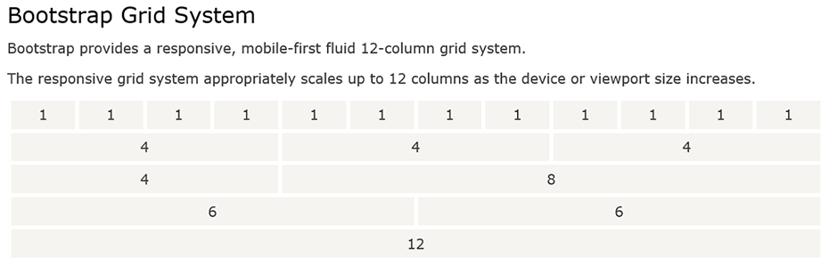
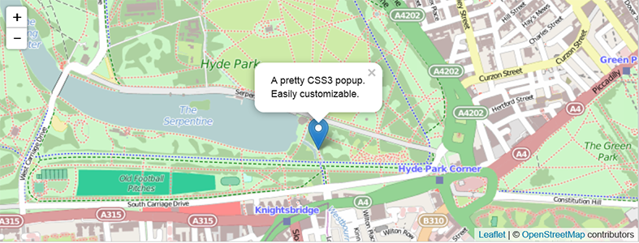
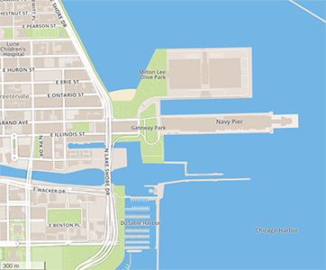
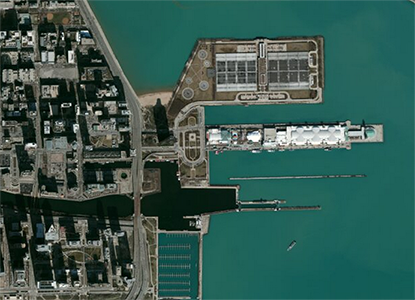

We begin by designing the basic layout and structure of the project site. Given that we wanted the application to run right off of it we knew we would have to implement some type of layout that resizes depending on browser size and screen resolution. While it could have been done by hand, it was much easier to implement Bootstrap 3 into the design, and use their framework to create a grid system that would allow us to easily place maps and graphs throughout the page and maintain correct sizes and aspect ratios.
Here is the basic grid system used by Bootstrap:
We also used Bootstrap to handle the creation of the navigation bar at the top of the page. It’s not fixed at the top so that you are able to scroll down and see more of the map and data and not be obstructed by the navigation header.
Majority of the containers used within the website are fluid and thus fill their respective regions as opposed to having fixed widths.
To create our map we used a few different resources depending on what was needed. We used Leaflet’s JavaScript library to manage and display our different map layers allowing for easy interactivity.
For our street view layer we used Mapbox’s API as we liked the look of it over the all too often seen Google Map’s layer.
For the satellite layer we used ArcGIS from ESRI which was very simple to toggle in using Leaflet’s library.
